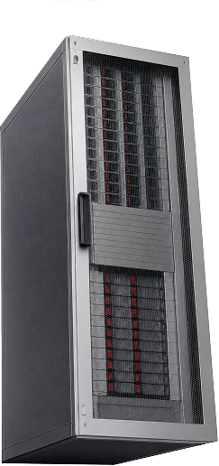
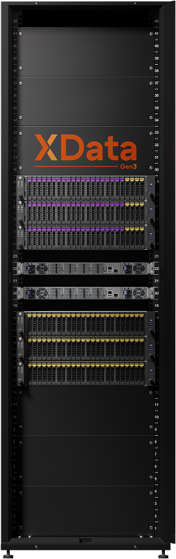
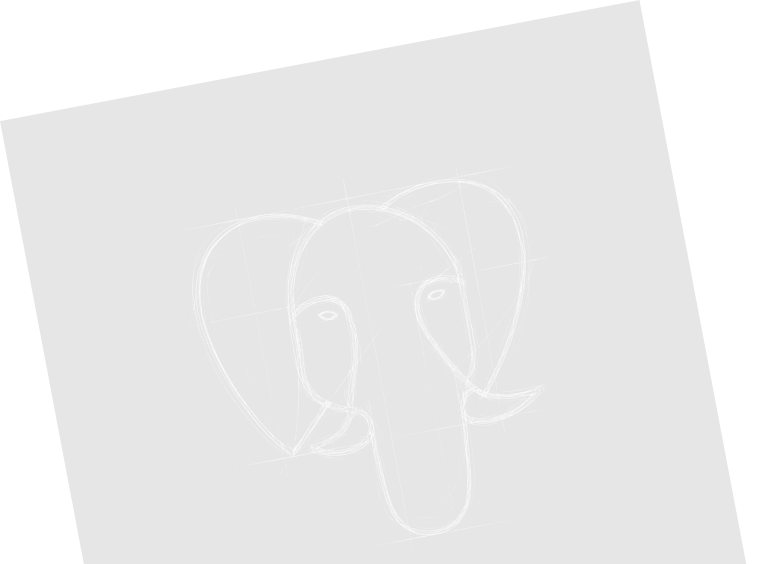
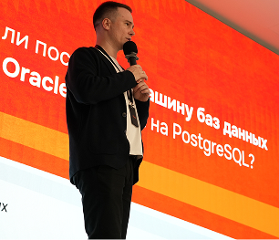
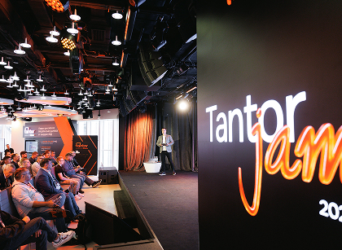
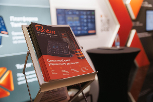
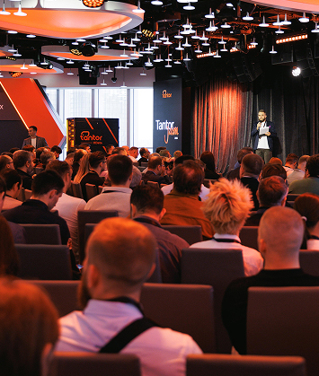

корпоративной СУБД нового поколения?


Не спешите их переписывать.
На PostgreSQL уже работают сотни российских бизнес-приложений, есть зрелая экосистема инструментов и расширений.
С ростом нагрузки архитектура усложняется: появляются отдельные СУБД для аналитики, инструменты синхронизации данных между контурами, дополнительные слои интеграции. Инфраструктура становится разрозненной и сложной в сопровождении.

с Postgres, 1С и другим ПО
и аналитики
масштабирование
Подход Tantor: 100% совместимость с PostgreSQL и упрощение архитектуры без переписывания кода бизнес-приложений.
МБД Tantor XData Gen3 – горизонтально масштабируемая платформа, которая объединяет OLTP и OLAP в одном контуре и сохраняет полную совместимость с PostgreSQL, существующим ПО и расширениями.
Инфраструктура остаётся привычной для разработки и эксплуатации, при этом исчезает необходимость в разнородных СУБД, синхронизациях и переписывании приложений.
без риска для бизнеса
для тех, кто отвечает не за тестовые стенды, а за непрерывность крупнейшего бизнеса».
централизованное управление БД PostgreSQL с ИИ
версия16
версия17
версия18
версия
версия16
версия17
версия18
версия
Tantor Postgres 18 — это СУБД для высоконагруженных систем с огромным количеством доработок на уровне ядра для повышения производительности, в том числе для работы с «1С».
Каждый релиз проходит тщательное тестирование на прикладных сценариях.




В этом году «Тантор Лабс» исполняется 5 лет.
За это время мы выросли из компании, оказывающей коммерческие услуги вокруг PostgreSQL, в полноценного вендора и одного из технологических лидеров российского рынка СУБД.
Отметить юбилей предлагаем вместе — на нашем традиционном Tantor JAM, который состоится 10 сентября 2026 г. в Москве. Будут новинки, общение и, конечно, немного праздника в честь нашего пятилетия!